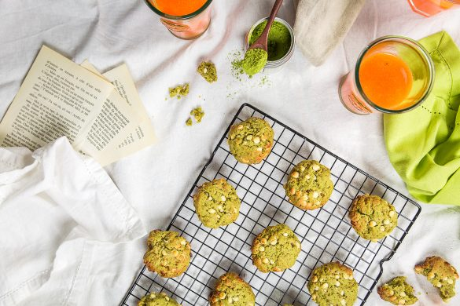

Cookies au thé matcha et chocolat blanc

Aujourd’hui je vous retrouve avec une recette de cookies au thé matcha et chocolat blanc pour un goûter ultra-gourmand!!
Les cookies, le thé, le goûter et moi c’est clairement devenue une grande histoire d’amour alors évidemment pour mon premier test de recette avec du thé matcha j’ai forcément pensé à faire de bons petits cookies. Je ne pourrais jamais vous dire qu’une recette n’est pas bonne car elle ne serait pas sur le blog vu que je poste ici seulement les recettes testées et approuvées par nos palais de grands gourmands donc là encore pour ne pas changer je n’ai qu’une chose à vous dire : on s’est régalés!! J’adore le thé matcha c’est un produit que je connais depuis quelques années maintenant et que j’aime bien consommer sous les coups de 10h ou de 16h histoire de faire une petite pause dans la journée. Son goût est très particulier et lorsque je voyais des recettes de cuisine à base de ce thé j’étais intriguée mais sans vraiment être tentée. Pendant notre deuxième voyage à New-York, (la fille a besoin de préciser que c’est la deuxième fois qu’elle va à NY^^) on avait nos petites habitudes dans un restaurant Thaïlandais à côté de l’hôtel et il y avait des Mochi au thé matcha (il s’agit d’une préparation à base de riz gluant) et j’avais particulièrement adoré. Ce jour-là, j’ai donc découvert le goût du thé matcha dans une pâtisserie et je dois dire que l’effet de surprise fut au rendez-vous. Lorsque l’on ne s’attend à rien ou pas grand-chose c’est généralement à ce moment-là que l’on est généralement le plus agréablement surpris et c’est clairement ce qui s’est passé pour nous. J’ai donc gardé en tête l’idée de faire moi-même une pâtisserie à base de thé matcha et mon amour pour les cookies l’a emporté pour ce premier essai. Après avoir lu que chocolat blanc et thé matcha se mariaient parfaitement bien entre eux et pour changer des classiques pépites de chocolat noir, j’ai sauté le pas. Ces cookies sont ultra-moelleux!! A la sortie du four on peut avoir l’impression qu’ils ne sont pas cuits mais c’est normal il faut juste leur laisser le temps de refroidir quelques minutes. Je vous conseille de les déguster le jour-même pour avoir le côté moelleux bien présent mais sinon vous pouvez les conserver dans une boîte hermétique, ils se conservent très bien vous verrez!! Je vous laisse regarder tout ça plus, j’espère que la recette vous plaira et dites moi si vous aussi vous avez déjà testé des recettes au thé matcha et si oui qu’en avez vous pensez?
Ingrédients
- Thé matcha - 1càc bombé ou deux selon l'intensité souhaitée
- Sucre muscovado (à defaut cassonnade ou sucre blanc) - 80g
- Farine - 220g
- Beurre fondu - 100g
- Levure chimique - 1 càc
- Sel - 1/2 càc
- Oeuf - 1
- Pépites de chocolat blanc - 100g
Instructions
- Dans un saladier, versez la farine
- Ajoutez la levure, le sucre et mélanger
- Ajoutez le thé matcha puis le sel. Mélangez le tout
- Faire fondre le beurre
- Creusez un puits dans votre mélange et ajoutez-y l’œuf puis le beurre
- Mélangez
- Vous allez obtenir une boule de pâte verte
- Incorporer les pépites de chocolat blanc
- Filmez et laisser au frais 30minutes-1h
- Préchauffez votre four à 180°C
- Formez des boules de pâte d'environ 30-35g et déposez-les sur une plaque à pâtisserie recouverte de papier sulfurisé
- Appuyez légèrement dessus
- Enfourner pour 10-12 minutes
- A la sortie du four les cookies peuvent paraitre un peu mou c'est normal
- Laissez-les sur le papier sulfurisé 5-10 minutes avant de les décoller
- Avec un jus maison c'est parfait!
Les tips de la communauté
Très enthousiaste réception avec plusieurs testeurs ayant réussi et adoré la recette. Les cookies sont moelleux, croquants, et c'est une excellente introduction au matcha en cuisine. Les enfants redemandent, ce qui valide la recette auprès des familles.
Astuces
- Peuvent se conserver 4-5 jours dans une boîte hermétique
- Texture parfaite entre moelleux et croquant à la fois
- Possibilité de remplacer chocolat blanc par chocolat noir sans problème
- Thé matcha à trouver chez Kusmi Tea ou Eurasie à Bordeaux
- Excellent pour introduire le matcha à la cuisine
Variantes suggérées
- Remplacer le chocolat blanc par du chocolat noir
- Ajouter des cranberries pour plus de texture
- Adapter la quantité de matcha selon l'intensité désirée